One system for the whole job
Quote, book, prep, crew, deliver, return, invoice. A web app for Session Hire that works on a phone in a field as well as on a laptop in the office, keeps Google Calendar working during the move, and hands off to Crewbox on site.
Projects and planning
Jobs split into phases (prep, build, show, load out) with their own dates, kit and crew.
Warehouse and stock
Labels, scanning out and in, availability you can trust, repairs and inspections.
Crew and light finance
Freelancer offers, call sheets and timesheets, then quotes, invoices and exports.
Where the build is
Loading the latest entry…
The sync test app
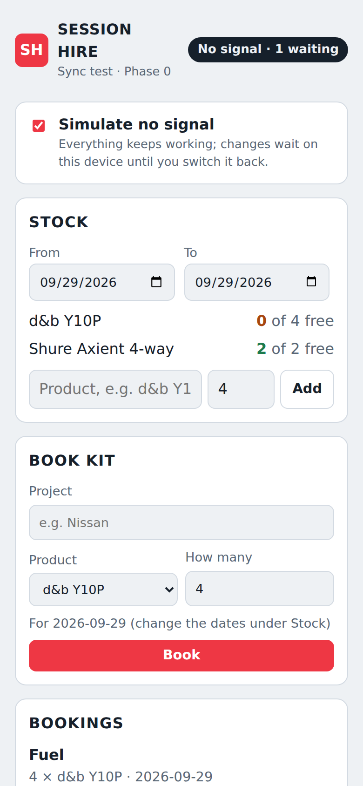
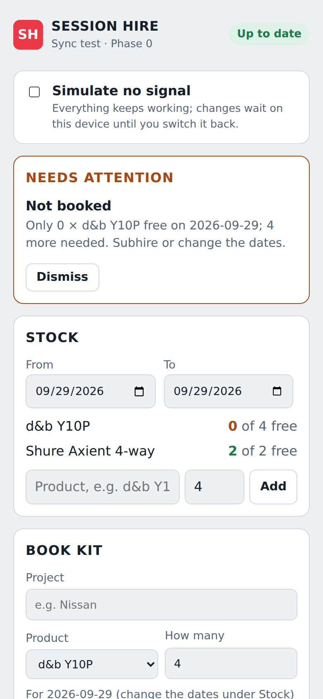
Jobs, the start of Phase 1
Each job has its client, venue, status and phases, and each phase shows how its days will read on the calendar. Crew are asked for from the job, and a rename reaches the crew too. Cancelling a job cancels its crew. (Decision 0007)
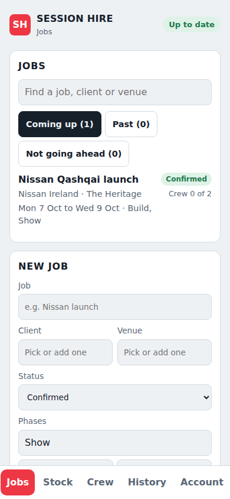
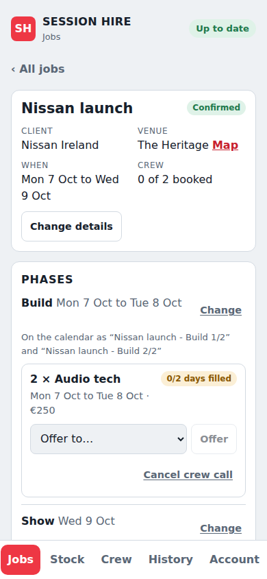
Confirmed jobs onto Google Calendar
Connect a Google account on the Account tab and pick its calendar. Every day of every confirmed job, from today on, goes on it in the format crew know, with the venue, the day's crew by name and a link back, and follows the job within seconds. Anything changed by hand in Google is put back each night. (Decision 0008)
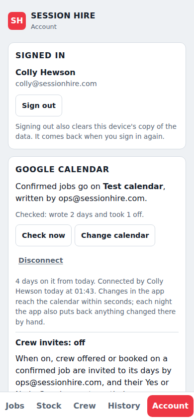
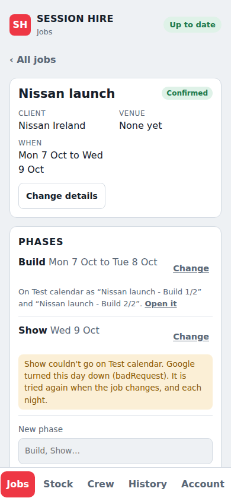
Crew invites and their answers
With the switch on the Account tab on, crew offered or booked on a confirmed job are invited to its days on Google Calendar, as ops do by hand today, and their Yes or No there counts as their answer, as on their link. Guests hear from Google only when it matters. A No from someone already booked is shown to the office rather than unbooking them. The switch starts off. (Decision 0009)
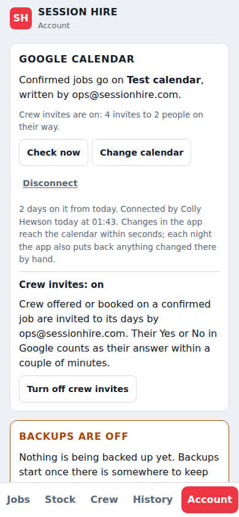
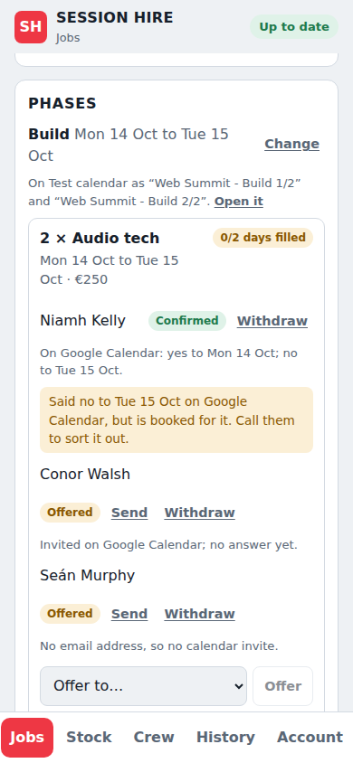
The week and month planner
Week and Month, beside the jobs list, lay out every job with anything on, or every person, a row each. Each day says which phase it is, as the calendar titles it, and how many of its crew are booked. Confirmed jobs are solid and quotes dashed; a day is green once its crew are booked and amber while some are still to find. Clashes are listed above, in words, with the job to open: booked while unavailable, or booked twice, and offers that would clash if they said yes. Worked out on each device, so it needs no signal. (Decision 0010)
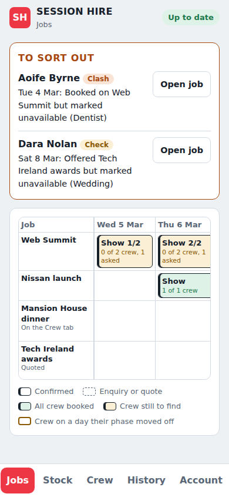
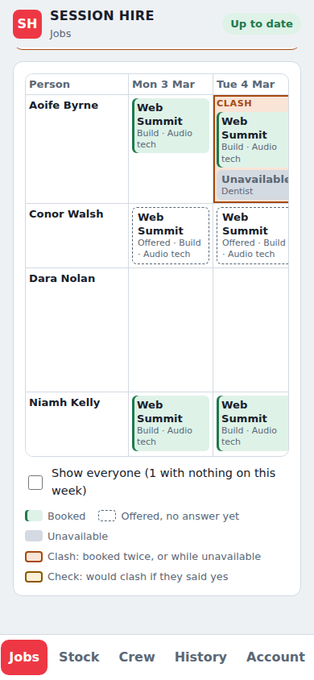
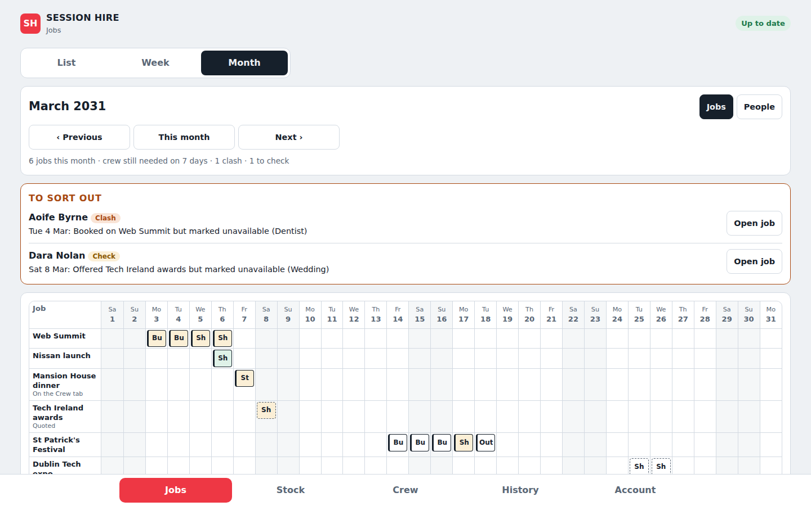
Bringing in the jobs already on Google Calendar
The office picks a calendar the connected account can see, its own or an organiser's shared with it, and a first day, and the app shows every job it would bring in before anything is saved: phases and days read from titles as they're typed today ("Nissan - Build 1/2"), the venue from the location, and the crew from the guests, booked, offered or declined by their answer. Jobs can be unticked or renamed, and people on the invites chosen for the crew list. Bringing in saves it all in one go; looking again shows only what's new and lists events changed in Google since. Nothing is written to Google and nobody is emailed. (Decision 0011)
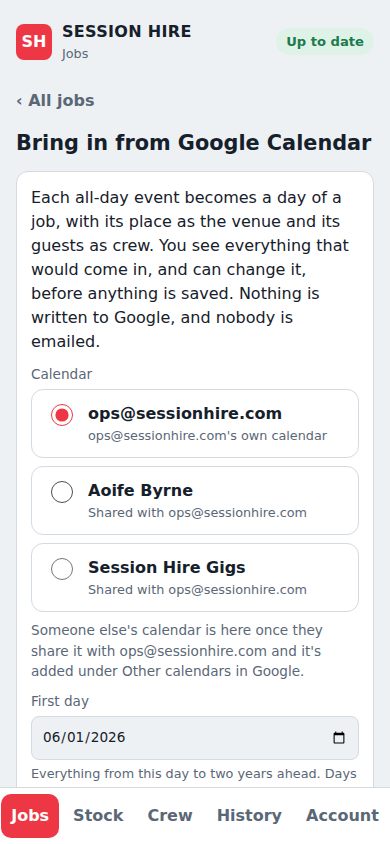
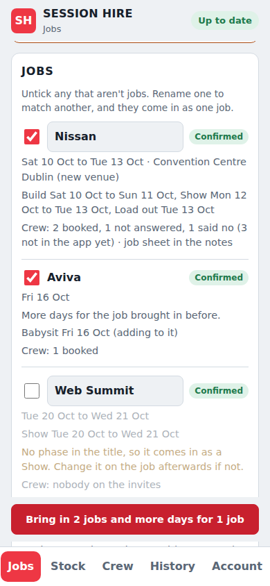
Crew booking, started early
The office offers a job and sends it by WhatsApp, text or email. The freelancer answers from their own link, with no app or login, and can take only some of the days. Nobody is double booked, and on a shortlist the first to say yes gets it. (Decision 0002)
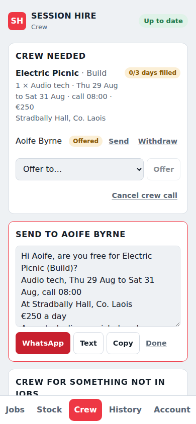
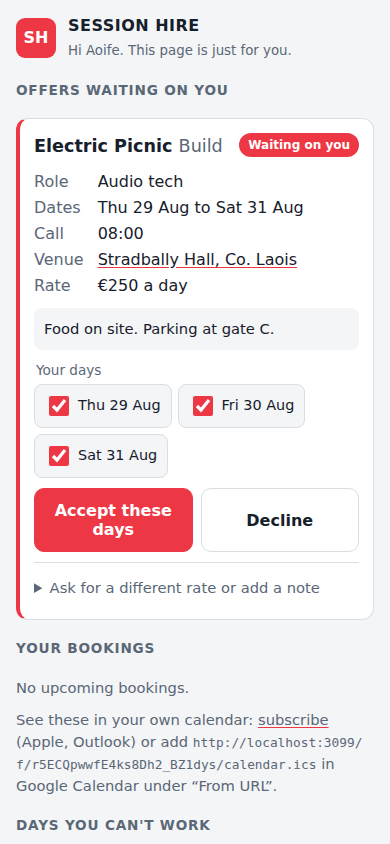
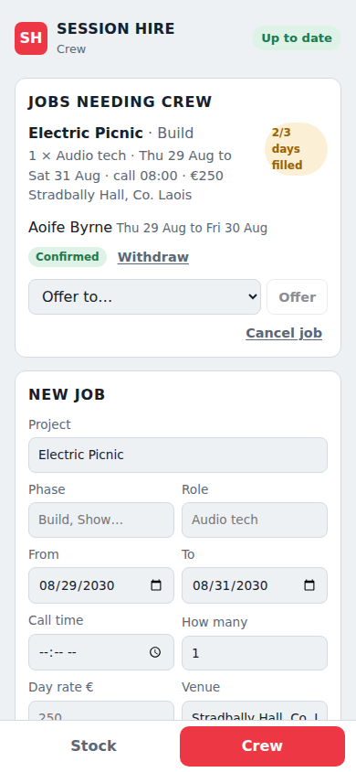
Design system
Colours, type and components from the app, now in Figma. Same names as the code, light and dark. Below: the Crew area rebuilt only from the library.
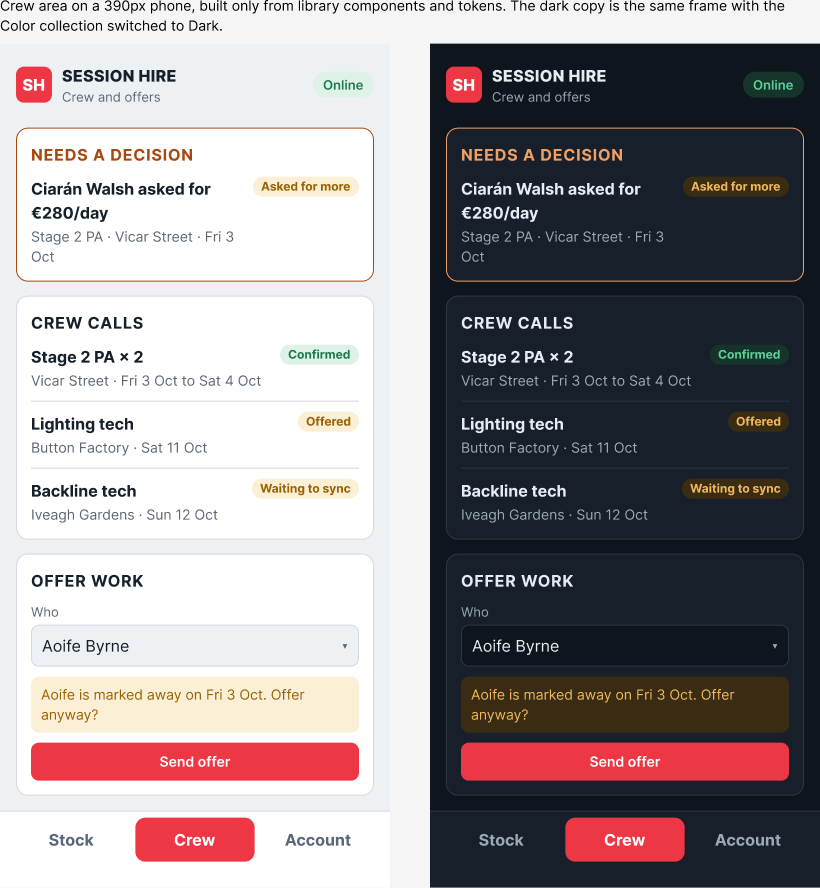
Three rules everything else follows
Open and flexible
"The closed ecosystems, their way is the only way."
- Full API, webhooks and export of everything, any time.
- Phases, statuses, roles, fields and templates are settings, not code.
- Any warning can be overridden with a note; overrides are logged, not blocked.
- New departments arrive as modules on one core, like Crewbox.
Meet freelancers in the middle
"A they come to us, not a meet in the middle."
- No app or login needed to get work: SMS, WhatsApp, email and calendar invites with one-tap links.
- Availability read from their own calendar, busy or free only.
- Certificates and bank details entered once.
- Hours become a ready-made invoice they approve.
Offline is normal
Being on site means the internet may be poor.
- Reading and common actions work with no signal: scan out and in, report a fault, accept a job.
- Nothing is lost: every change waits on the device until the server confirms it.
- Real time when online: changes show on other screens within a second.
A gig is a row of all-day calendar events
Read from the calendars on 29 September 2026: 58 events from June to October. Each phase of each day is its own event, titled Project - Phase n/m, with the venue as location and the crew invited as attendees. Accepting the invite is the crew's confirmation.
What the calendar carries
- Two ops staff organise; crew are invited. About two thirds of attendees use personal Gmail, Outlook or iCloud addresses.
- Descriptions are usually empty. When filled, they hold a kit list (
4 x d&b Y10P) and a run of show. - A shared Session Hire Gigs calendar exists but is empty.
What that means for the design
- The unit of scheduling is the phase-day, so the model has projects with phases.
- Calendar sync must produce this exact shape so crew see no change on day one.
- RSVPs map onto crew assignment status, both ways.
- Freelancers need magic links, not company logins.
Six tools, the same five blind spots
Rentman, TeamTrack, Current RMS (being renamed OnRent Events), Flex, HireHop and easyjob, compared from vendor sites and reviews in September 2026. The last column is what Session Hire's system aims for.
Where not to compete: Rentman's quoting and invoicing breadth and HireHop's core stock handling. Matching them is enough. Full detail and sources in the competitor audit under Full documents.
Phones send requests; the server decides
Each device keeps a local copy of what its user needs and an outbox of changes. Changes are sent as requests ("add 4 × Y10P to Nissan") that the server confirms or turns down, so two people offline cannot both book the last four speakers. Things that already happened in the real world, like a scan, are always accepted and reconciled afterwards.
Walk through it: two people, four speakers, no signal
Only 4 are free that week. Both phones show the booking as pending.
Each request carries its own id, so a retry is never counted twice.
The server checks availability and turns the second one down with a reason.
Dara sees "4 short, subhire or swap?" and picks a subhire. Nothing was lost and stock was never overbooked.
What each device keeps
| Who | Synced to their device |
|---|---|
| Ops and office | Live projects from 30 days back to 12 months ahead, full catalogue, crew |
| Warehouse | Catalogue, assets, cases, locations, pick lists for the next 14 days |
| Crew chief on a job | That job: phases, crew and phone numbers, kit list, run of show, venue |
| Freelancer | Their own offers and bookings, call times, venues, their documents. Never other people's rates. |
The data at a glance
- Job for a client, with a status (built)
- Phase: prep, build, show, load out… (built)
- Equipment line by department
- Crew requirement per phase (built)
- Quote, versioned
- Client, contact, venue (built)
- Product: the model
- Asset: one item, hidden id
- Identifier: QR, serial, RFID…
- Container: case, rack, bundle
- Movement: every scan
- Maintenance: faults, tests
- Person: staff, freelancer, supplier
- Documents with expiry
- Availability
- Assignment: offered → confirmed
- Timesheet
- Price lists and rates
- Quotes and invoices in EUR
- VAT 23% and 13.5% per line
- Freelancer costs
- Dashboard and exports
| Layer | Choice | Why |
|---|---|---|
| Language | TypeScript throughout | Same as Crewbox; shared types |
| App | React, Vite, installable PWA; Capacitor for scanning later | Same as Crewbox |
| On the device | SQLite in the browser, IndexedDB fallback | Real availability queries offline |
| Server | Fastify with shared schemas | Same as Crewbox |
| Database | Postgres, EU region, point-in-time recovery | Date-range queries for availability |
| Sign-in | Google Workspace for staff; a private link for each freelancer | Built (Decisions 0002 and 0003) |
| Sync engine | Our own, on the Crewbox pattern | Decided and tested (Decision 0001) |
| Backups | Nightly, to a separate bucket, each proved by a test restore | Built (Decision 0004) |
| Error alerts | Sentry, EU data, from the server and every phone; uptime and backup checks | Built (Decision 0005) |
| History and export | Every change kept with who, when and on what device; one file with everything as spreadsheets and JSON | Built (Decision 0006) |
| Jobs | Clients, venues, jobs and their phases, changed field by field so two people's edits both stand | Built (Decision 0007) |
| Google Calendar | The app writes confirmed jobs to one calendar, as one connected account, on each change and in a nightly check | Built (Decision 0008) |
| Crew invites | Crew are guests on their days' events; their answers are read back every two minutes by asking Google what changed, so the database sleeps | Built, switch off (Decision 0009) |
| Planner | The week and month by job or by person, with clashes flagged, worked out on each device from what it already holds | Built (Decision 0010) |
| Calendar import | The jobs on an organiser's calendar come in after a look at everything first; each event-day is remembered, so looking again shows only what's new | Built (Decision 0011) |
Keep the calendar, change nothing on day one
The system writes to the shared Session Hire Gigs calendar in today's format and listens for changes in seconds. Each project runs in one of two modes, and new projects switch to app-led once Phase 1 is live.
Built so far: app-led writing (Decision 0008)
A member of staff connects one Google account on the Account tab and picks one of its calendars: Colly's test calendar first, Session Hire Gigs later. The app then keeps every day of every confirmed job from today on there, in today's format, and takes a job off when it is cancelled. Event ids are worked out from the job, so a retry never makes a double, and a hidden mark keeps the app to its own events. It runs when something changes and checks the calendar once a night, so the database can sleep. Past days are never changed.
Built so far: crew invites and their answers (Decision 0009)
A switch on the Account tab, off to start with. When on, everyone offered a place on a confirmed job, or booked on it, with an email address in the app, is a guest on its events on their days, invited by the connected account; crew can't see each other's addresses. Their Yes or No counts as their answer through the same rules as their link: the first to say yes gets the place, a No to every day declines, Maybe waits, and a No from someone already confirmed is flagged for the office instead. Google emails guests only when they are added or taken off, or the title, date or place changes. Every change reads the event first, so guests added by hand and answers given in the meantime are kept. The server asks Google every two minutes which events changed and only touches the database for a new answer. Next: edits flowing back for calendar-led jobs.
Built so far: bringing jobs in (Decision 0011)
The jobs already on the organisers' calendars come into the app from the Jobs tab: all-day events are read from a chosen day to two years ahead, the title split at its last " - " into job and phase, a job's days in a row made into phases, locations matched to venues and guests to people. Everything is shown before it's saved; TBC or hold brings a job in pencilled in. Each event-day is remembered by Google's own id, so the other organiser's calendar or a second look brings in only what's new. The organiser's calendar keeps these jobs' events, so the app doesn't write them to the jobs calendar too.
Calendar-led: ops can keep working in Google. Moving an event moves the phase; RSVPs update crew status.
Importing history
Built: the jobs on an organiser's calendar come in grouped by the text before the last " - ", phases in order, guests matched to people, and job sheets kept in the notes as written. Kit lists become draft kit lines once the warehouse arrives (Phase 2). (Decision 0011)
Personal feeds
Every person also gets a private calendar feed of their own bookings that works in any calendar app. Workspace is confirmed; admin access will follow, and a test calendar is ready.
Office to site, and back again
Crewbox runs on site with no internet: chat, push-to-talk, running order, patch, lighting and the show log. Session Hire's system covers everything before and after. They meet twice per event.
Show pack as files
- Patch CSV and lighting CSV in Crewbox's own formats
- Running order and a crew list with the join QR
- The crew chief loads it on the box
Direct link
- Keyed import: event, channels, named crew, running order
- Show log readable by key, as JSON
- Asset tag on fault reports
- Optional crew clock-in for timesheets
From zero labels to trusted availability
No stock is barcoded yet. The recommendation is a QR code plus a readable number on every item, scanned with phone cameras first, with RFID kept for later where it pays off most: cables.
The number is what people read out; the QR is what phones scan. The item's real id is hidden, so a worn label can be replaced without losing its history.
| Method | Cost per tag | Reads from a phone browser? | Role |
|---|---|---|---|
| QR code | Cents | Yes Android native, iPhone via a library | Primary |
| Code 128 barcode | Cents | Yes | Reads manufacturer serials |
| UHF RFID | €0.50 to €4 | No needs a handheld reader | Later, for cables and bulk |
| NFC | €1 to €3 | Android only | Optional backup |
| Bluetooth tracker | €5 to €40 | No | Find a few high-value cases |
| GPS tracker | €35 to €100 + SIM | No | Vans |
Labels by kind of kit
- Most gear: polyester, thermal transfer with resin ribbon, laminated.
- Road cases and rigging: riveted or bonded metal tags.
- Cables: heat-shrink or wrap-around flag labels, or tracked as bundles.
- Rigging hardware: engraved mark, which the law requires anyway.
Cases hold things; scanning the case moves them
Rollout
Starter hardware is roughly £4,000 to £6,000: two rugged Android scanners, pocket and ring scanners, a label printer and a portable labeller. Prices are estimates; get supplier quotes.
Irish rules to build in
- Lifting gear (S.I. 299/2007): thorough examination every 6 months for lifting accessories and hoists, 12 months for items that support lifting gear, a register, and a lasting mark on each item.
- Electrical equipment (Reg. 81): user checks before use, periodic inspection, and testing where appropriate, at risk-based intervals.
- Anything overdue cannot be scanned out without an override.
Build order
Each phase replaces something people do today and is useful on its own. The riskiest piece, offline sync, is proven first.
What's settled and what's open
The source documents
Everything above is drawn from these files in the repo's docs/ folder. They are rebuilt into this page whenever they change.
Built from docs/ on branch main of legofsalmon/sess-sys. To update: edit a markdown file, then run node scripts/build-hub.mjs.